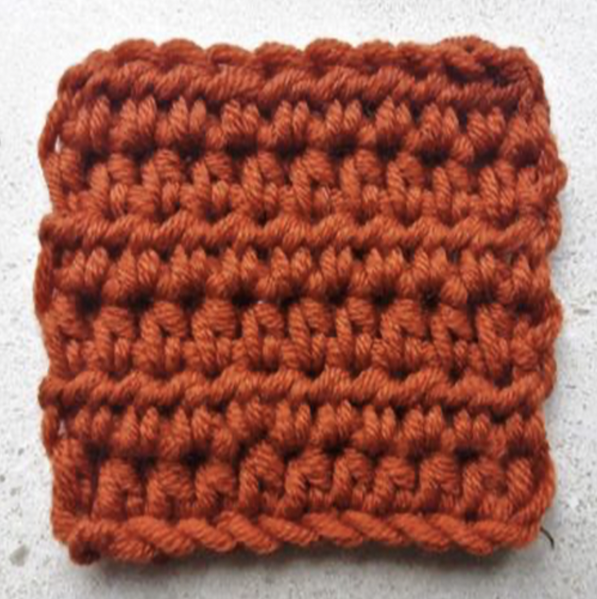
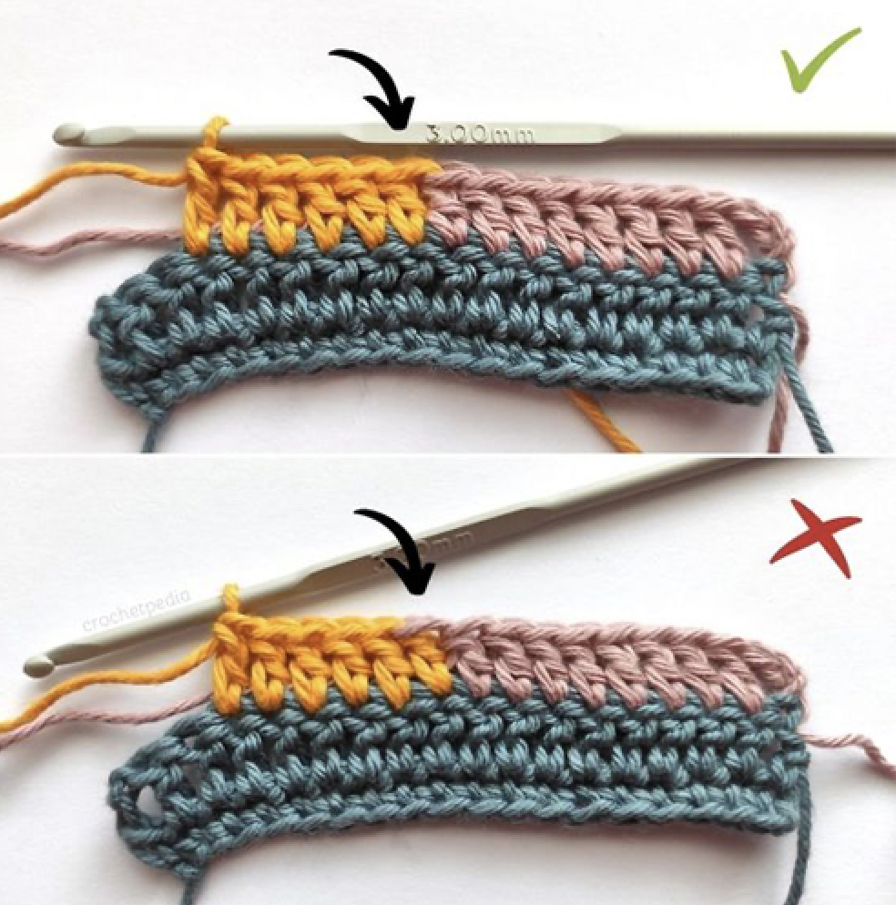

Grundteknikker
Velkommen til vores Grundteknik-sektion! Her kan du lære de essentielle færdigheder og teknikker inden for hækling. Uanset om du er helt nybegynder eller blot ønsker at opfriske dine basale færdigheder, vil du finde trin-for-trin vejledninger, tips og tricks samt nyttige videoer, der hjælper dig med at mestre hæklingens grundlæggende teknikker.

Stangmaske
Magisk ring
